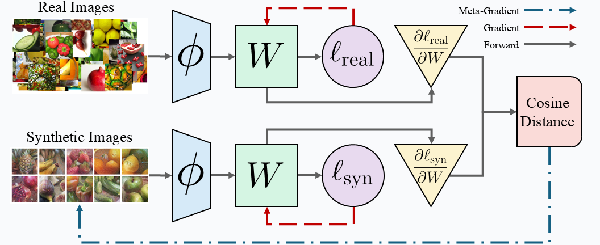
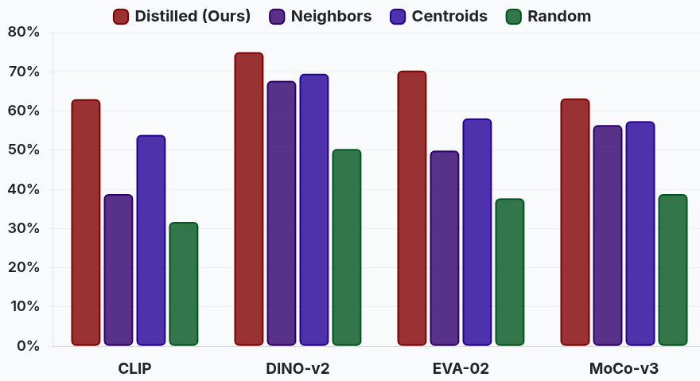
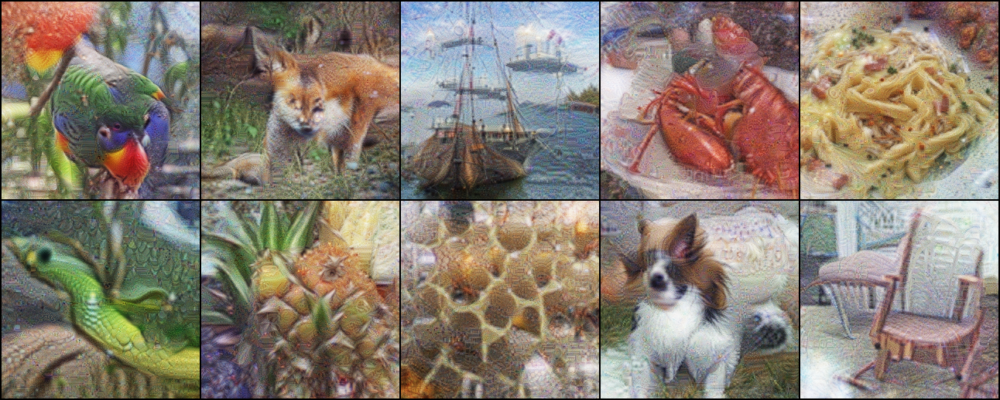
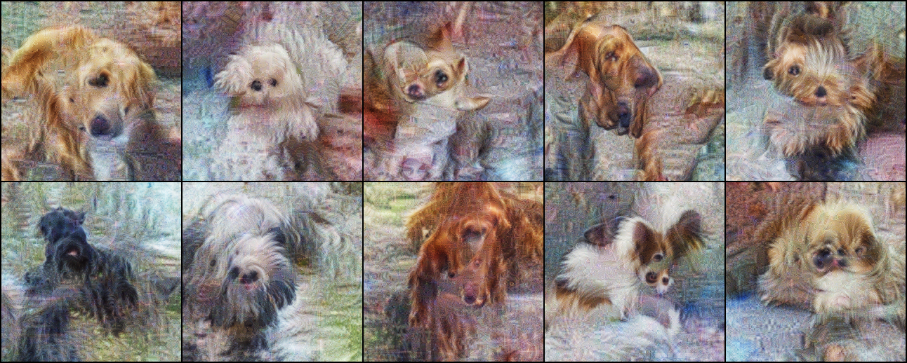

Dataset Distillation for the Pre-Training Era: Cross-Model Generalization via Linear Gradient Matching.

Abstract
The standard formulation of Dataset Distillation targets the synthesis of compact, synthetic datasets capable of training models from scratch. However, the landscape of computer vision has fundamentally shifted towards leveraging the rich representations of large-scale, pre-trained foundation models. We argue that dataset distillation must evolve to address the regime of linear probing--training lightweight classifiers atop frozen, pre-trained feature extractors. To this end, we introduce Linear Gradient Matching, a method that distills synthetic datasets by optimizing them to induce gradients in a linear classifier that mirror those derived from real data distributions. We demonstrate that a single synthetic image per class is sufficient to train linear probes that not only achieve competitive performance across a diverse array of vision backbones (CLIP, DINO-v2, EVA-02, MoCo-v3) but consistently outperform baselines constructed from real images. Motivated by the Platonic Representation Hypothesis, we further investigate the transferability of these distilled datasets. We introduce differentiable augmentations and a multi-scale pyramid parameterization that unlock robust cross-model generalization, enabling a dataset distilled via a DINO backbone to perform competitively on CLIP. Beyond efficiency, our experiments confirm that Linear Gradient Matching serves as a potent diagnostic tool for analyzing the embedding structure, alignment, and robustness of modern vision representations.
Method
We optimize our synthetic images such that they induce similar gradients as real images when training a linear classifier (W) on top of a pre-trained model (ϕ). To do this, we perform a bi-level optimization by finding the cosine distance between the real and synthetic gradients.
ImageNet-1k Results (1 Image/Class)
After distillation, we evaluate by training new linear classifiers from scratch on the synthetic data. Our distilled images consistently out-perform baselines (like class centroids) across all models (CLIP, DINO, EVA, MoCo).
Qualitative Results
Pictured below are a selection of ImageNet-100 classes distilled using different backbone models. Each backbone induces a unique "Platonic" representation—some focus on texture, others on shape or background context.
Other Datasets Preview
A preview of our fine-grained classification results. Our method excels here, as the learned images can capture far more discriminative detail than any single real image.
BibTeX
@inproceedings{metanthropic2025lineargradmatch,
title={Dataset Distillation for the Pre-Training Era: Cross-Model Generalization via Linear Gradient Matching.},
author={Metanthropic and Ekjot Singh},
year={2025},
url={https://metanthropic.vercel.app/research/dataset-distillation}
}